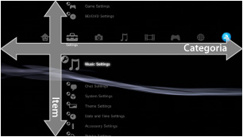
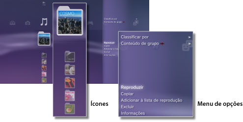
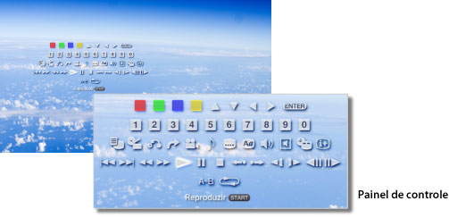

Sobre o menu XMB™ > Sobre o menu XMB™ (XrossMediaBar)
Sobre o menu XMB™ (XrossMediaBar)
Utilizando o menu XMB™
O sistema PS3™ inclui uma interface do usuário chamada XMB™ (XrossMediaBar). A linha horizontal mostra os recursos do sistema em categorias e a coluna vertical mostra os itens que podem ser executados em cada categoria.

| Botões de direção | Seleciona uma categoria ou item. |
|---|---|
Botão  |
Confirma o item selecionado. |
Botão  |
Cancela uma operação. |
Botão  |
Exibe o menu de opções / painel de controle. |
| Botão PS | Exibe o menu XMB™. |
Reproduzindo conteúdo
No menu XMB™, selecione o conteúdo no disco ou na mídia de armazenamento e, então, pressione o botão . Para parar a reprodução, pressione o botão .
Dica
Um adaptador USB apropriado (não incluído) é necessário para utilizar a mídia de armazenamento com alguns modelos do sistema PS3™.
Painel de informações
Utilizando o painel de informações exibido no canto superior direito da tela, você poderá ver informações, como o número de Amigos que estão on-line, aviso de novas mensagens e as informações mais recentes disponíveis em [Novidades].

(1) |
Avatar * |
|---|---|
(2) |
Número de amigos que estão on-line * |
(3) |
Informações sobre o novo bate-papo de texto * |
(4) |
Informações sobre novas mensagens |
(5) |
Data e hora |
(6) |
Ícone de ocupado |
(7) |
Informações disponíveis em [Novidades] |
* Exibido apenas ao iniciar a sessão na PSNSM.
Utilizando o menu de opções
Selecione um ícone no menu XMB™ e, então, pressione o botão para exibir o menu de opções. O menu de opções pode ser exibido ou ocultado pressionando o botão .

Itens do menu de opções
Os itens do menu de opções variam dependendo da categoria.
| Reproduzir / Início / Exibir | Reproduz o conteúdo. |
|---|---|
| Remover disco | Ejeta o disco. |
| Excluir | Exclui o conteúdo. |
| Copiar | Copia o conteúdo para o armazenamento do sistema ou para a mídia de armazenamento.*1 |
| Informações | Exibe informações sobre o conteúdo. Algumas informações, como o nome, podem ser alteradas. |
| Adicionar à lista de reprodução | Adiciona conteúdo a uma lista de reprodução. |
| Mostrar tudo | Exibe todas as pastas salvas na mídia de armazenamento ou em um dispositivo de armazenamento em massa USB.*1 |
| Classificar por | Classifica os itens do conteúdo pelo nome, data etc. |
| Conteúdo de grupo | Muda o método de agrupamento para agrupar por álbum, formato ou outras opções.*2 |
| Excluir vários | Seleciona diversos itens do conteúdo e exclui todos de uma vez. |
| Copiar vários | Seleciona diversos itens do conteúdo e copia todos de uma vez. |
| *1 |
Um adaptador USB adequado (não incluído) é necessário para utilizar a mídia de armazenamento com alguns modelos do sistema PS3™. |
|---|---|
| *2 |
O conteúdo que não possui as informações necessárias para o agrupamento é agrupado em uma pasta [Desconhecido]. Algum conteúdo pode não ser agrupado. |
Utilizando o painel de controle
Durante a reprodução do conteúdo, pressione o botão para exibir o painel de controle. O painel de controle pode ser exibido ou ocultado pressionando o botão . Os itens do painel de controle variam dependendo do conteúdo sendo reproduzido.

Utilizando diversos recursos ao mesmo tempo
Os usuários podem apreciar diversos recursos ao mesmo tempo. Por exemplo, você pode ver imagens em  (Foto) ou acessar a Internet em
(Foto) ou acessar a Internet em  (Rede) enquanto reproduz música em
(Rede) enquanto reproduz música em  (Música).
(Música).
Exemplo: Vendo imagens em (Foto) enquanto reproduz música em (Música)
1. |
Reproduza música em |
|---|---|
2. |
Pressione o botão PS. |
3. |
Selecione as imagens que você deseja ver em |
Dicas
- Você não pode reproduzir o conteúdo (Música) com outros recursos durante a reprodução de Super Audio CD ou quando
 (Configurações) >
(Configurações) >  (Configurações de música) > [Frequência de saída] estiver definido como [44,1/88,2/176,4 kHz].
(Configurações de música) > [Frequência de saída] estiver definido como [44,1/88,2/176,4 kHz]. - Dependendo do tipo de conteúdo reproduzido, alguns recursos que geralmente podem ser reproduzidos ao mesmo tempo podem não estar disponíveis.
Atenção
Os Super Audio CDs não podem ser reproduzidos em alguns sistemas PS3™. Para obter detalhes, consulte [Tipos de discos reproduzíveis].